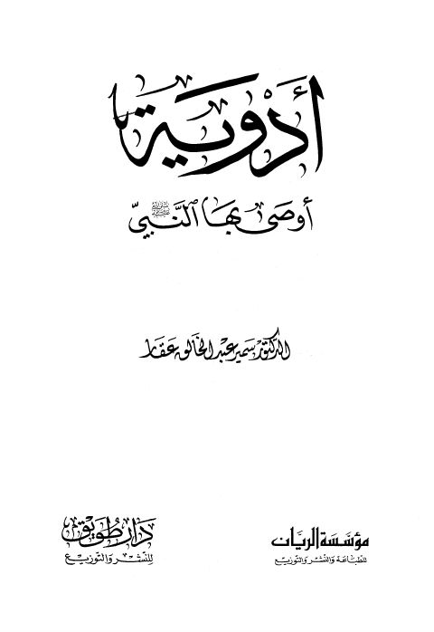

Downloads need an internet connection.
أدوية أوصى بها النبي
Authors: سمير عبد الخالق عقار
Publishers: مؤسسة الريان دار طويق
▫️ العنوان: أدوية أوصى بها النبي ▪️ المؤلف: #سمير_عبد_الخالق_عقار ▫️ الناشر: #مؤسسة_الريان • #دار_طويق ▪️ تاريخ النشر: 1425هـ 2004م ▫️ بلد النشر: بيروت، #لبنان • الرياض، #السعودية ▪️ الطبعة: 1 ▫️ عدد الأجزاء: 1 ▪️ الصفحات: 207 ▫️ نوع الوعاء: #كتاب ▪️ التصنيف الرئيسي: #السيرة_النبوية ۪